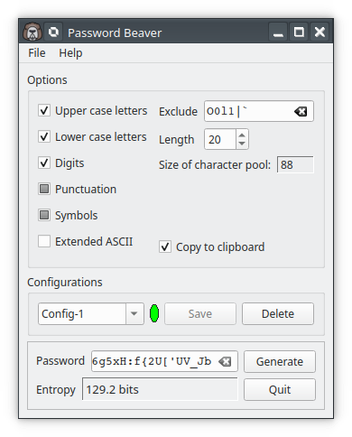

Password Beaver is a lightweight, easy to use program that generates secure passwords. Because some programs or Web sites have unusual requirements for passwords, Password Beaver is very configurable. Here’s what you can do:
Set the password length from 8 to 99 characters
Select the characters used to create the password
Set whether the new password should be copied to the clipboard.
Exclude arbitrary characters to improve readability or to satisfy a cranky Web site.
Save configurations between sessions.
By default it creates passwords using a random selection of printable characters, creating passwords that are very hard to break.
Password Beaver selects characters from a pool or group of characters based upon the options. By default the pool starts as the printable characters from the ASCII character set. Optionally, the pool can be expanded to include the most common Extended ASCII character set, ISO-8859-1.
Characters are divided into several groups, upper case letters, lower case letters, digits, symbols, and everything else to which we refer to as punctuation.
Password Beaver can be set to omit, request or require characters from one or more of these groups. You can also select an arbitrary set of characters to be excluded. You may want to do this to improve readability in case the password needs to be manually typed or perhaps to satisfy a Web site which doesn't accept some characters in its passwords. The length of the password can be set to minimum length of 8 characters and a maximum of 99. After a password is created it is copied to the clipboard but this feature can be turned off if desired.
The generated passwords are not easy to remember so Password Beaver is best used with a password manager. The passwords (ones with symbols, punctuation, etc.) are hard to crack because a dictionary attack is very unlikely to succeed and a brute force attack will likely take a very long time. That said, a long password, even if it contains only alphabetic characters, will still offer a lot of security. The entropy is a good but not infallible indication of the strength of a password. See the section About Passwords below.
Generally the best choice is to make a long password from a large pool of characters. If the ASCII character set is chosen (i.e. Extended ASCII is not chosen) there will be 85 printable characters to select from while selecting Extended ASCII (usually referred to as ISO-8859-1 or Latin 1) will give 155 possible characters.
However, a program or Web site that requires a password may not accept all possible characters or it may set some requirements such as requiring or forbidding certain groups or characters. Using the check boxes, you can exclude, require or merely request characters from the groups.

In
this case, Upper
case letters,
Lowercase
letters and
Digits
are
required.
Symbols and
Punctuation
characters
are requested.
Extended ASCII
characters
are excluded. The potentially confusing characters O (upper O), 0
(zero), I (upper I), l (lower L) and 1 (digit) are excluded. The
password has a length of 16 characters. The green ellipse indicates
that this configuration has been saved as Config-1. The new password
is taken from a character pool of 88
characters
and the Entropy is 129.2
bits.
A
screenshot of Password Beaver.
Passwords are created by randomly taking characters from the base character set (ASCII or Extended ASCII). Normally you should make passwords with characters from all of the classes but there may be reasons that you want to require or exclude some classes or characters. This is usually because a particular Web site has its own requirements.
The character class check boxes have three states.
If the checkbox is unchecked, that group of characters will be excluded from the character pool.
If it is fully checked at least one character from the group will be required.
If it is partly checked, characters from that group are requested. They may appear in the password or they may not.
You may want to exclude certain characters arbitrarily from the character pool. It may be that a Web site does not accept some characters or you may wish to avoid characters that are easily confused such as 1 (one), I (upper I) and l (lower L). Enter the characters in the Exclude text editor.
The length of the password can be changed in the Length spin box. The allowed range is 8 to 99 characters. The default length of 16 is a good choice for most uses although if the character pool is small, just the upper case characters for instance, longer passwords should be used.
The character Pool size from which passwords are made is shown underneath the Length control. This field is for information only and reflects the choices made with the check boxes and the Exclude editor.
The default behaviour of Password Beaver is to copy the password to the system clipboard as soon as it is generated. Turn this off if you do not want the password to appear in the clipboard. In this case you will have to press the Copy button or copy the password by hand.
Password Beaver maintains a database of configurations to simplify creating passwords for sites with particular requirements. In the Configurations section there is a combo-box that allows you to select sets of options by name and to enter names for new sets of options. There is also a small indicator to remind you when the options have been modified but not saved and two push buttons labelled Save and Delete.
When Password Beaver is first started it loads a default configuration named Default. This configuration can be modified but you cannot save or delete it under this name. However, the name can be changed and the configuration saved under this new name. In the screenshot the default configuration has been modified and saved as “Config-1”.
To the right of the combo box there is a small round widget. If it is green it indicates that the current configuration is stored in the database under the current name. If it is dark red it indicates that either
there is no set of options with the name shown in the editor or
that there is an entry in the database with that name but the stored options are different from those shown.
Pressing the Save button will store the data by creating a new entry if one with the current name does not exist or by overwriting the stored options with the new ones. The Delete push button will remove the named set of options from the database.
Note that the Save and Delete buttons can be enabled or disabled depending upon whether either operation is permitted. In particular, they enforce the read only status of the Default entry. If Default is the current item, both push buttons are disabled, even if the widget is red showing that the options have been changed. If you wish to save the new options, type in a new name then save the options.
Passwords provide excellent access security but are getting a bad reputation because many people are using them poorly. Often password are too short, are too simple or are a poor choice such as '123456' or 'password'. Many people don't realise how important it is to make and use good passwords. Lets go through some of the things you should think about when making a password.
Although much of your password security is up to you, the places where you use them have responsibilities too. A good site will create a cryptographically secure hash of your password and store that. When you log in, the password you provide will be hashed and compared to the stored hash. Your password is never stored explicitly so a bad guy who steals it from the site's server will not have a useful password.
However, some sites with lazy administrators do store passwords explicitly. If you have ever had a forgotten password emailed to you then you have used such a site. If their list of passwords is hacked, the passwords become immediately useful. Tom Scott on the YouTube channel Computerphile gives much more information on this.
The big problem is that you, as a user, can't easily tell how securely a site stores its passwords so it's possible that in spite of your best efforts your password will be be vulnerable. Because many people use the same password for everything, the release of a reused password from an insecure site gives the bad guys a big clue about what a password might be on another site. So, if you reuse your password, even if you have a great password that you have kept secret and the second Web site is secure, all of the sites where you have reused the password are now much less secure because knowing the password on one site means that it is known on them all. You don't want to help the bad guys so always, always, always:
Generate a fresh high-security password for each site. Never reuse passwords.
It's worth noting that while we often think about password security there is another credential that affects computer security, the user name or user ID. Most often, user names are selected for convenience. If you have a login at work your user name may conform to some template such as firstname.lastname, firstname-lastname or it may simply be your email address. These are all easy to find and use if one person is being targeted. If a large organization is targeted then userIDs can be guessed — it's possible, maybe even likely, that users tom.smith or mary.jones exist. A bad guy can then break in by finding a user with a common name and a bad password. If unintuitive user names that are not part of the user’s email address are used the bad guy’s job is just a bit harder.
There’s more to ‘hard to guess’ than you might think. Not only should it be hard for a human to guess but the technology of guessing or cracking passwords by machine is very well developed. The excellent YouTube channel Computerphile has videos on password choosing and password cracking which are well worth watching. Randall Munroe has created one of his wonderful XKCD comics about choosing a password.
The good news is that making a password which is hard to guess for both man and machine is not hard. Essentially, you have to prevent what are referred to as dictionary and brute force attacks.
A brute force attack takes advantage of those using passwords which are too short and are created from a small pool of characters.
Imagine creating a password that is four characters long and is created from the 26 lower case ASCII characters. If repetitions are allowed, there are 23,751 ways of doing this and someone could easily write ordinary software to test all of them in much less than one second. If we double the length of the password we can create 13,884,156 distinct passwords. This is better but such a password is still easy to crack, especially if the bad guy knows how impoverished the character pool is.
If we decide to use both upper and lower case characters we now have a pool 52 characters giving 341,055 four character passwords and 2,217,471,399 eight character passwords. Creating a 16 character password from the full 94 character ASCII set allows us to choose from 5,965,645,022,526,086,144 (about 6×1018) passwords. Currently, in 2022, one of these passwords is still uncrackable in any reasonable time.
Enough passwords have been released to the Internet as the result of break-ins into insecure Web sites that dictionaries of common passwords exist that can be tested against your password very quickly in a so-called dictionary attack. Ordinary English words (or words in other languages) are, of course, also available as dictionaries making them insecure as well.
Dictionary attacks rely upon the laziness of users when they create passwords. If we look at a bit of the NordPass most common password list for 2021 or at a list separated by management level from 2022 we see our old favourites. Clearly the CEOs aren’t any better at taking security seriously than are their workers.
Rank |
Password |
|
|---|---|---|
|
Workers |
CEOs |
1 |
123456 |
123456 |
2 |
123456789 |
password |
3 |
12345 |
12345 |
4 |
qwerty |
123456789 |
5 |
password |
qwerty |
6 |
12345678 |
1234 |
7 |
111111 |
qwerty123 |
8 |
123123 |
1q2w3e |
9 |
1234567890 |
111111 |
10 |
1234567 |
12345678 |
On a modern computer, trying to log in with a series of guesses is less likely to work because a good system will make you wait a bit after a failed login. Often a delay of about five seconds is placed after the first two failed logins with a much longer one after the third failed attempt and the system may even require the administrator to intervene at this point. This greatly reduces the effect of password guessing programs.
A full description of password cracking would be much too long to include here. If you want to learn more see the Wikipedia article or the Computerphile YouTube video on password cracking. We’ll look at a few ways that the bad guys use when they want into your system.
The entropy of the password is a measure of how many guesses would
be necessary to guess it. Specifically, it is
log2(n)
where n
is the number of possible passwords given the password length
and the character pool size. This is described in a Wikipedia
article.